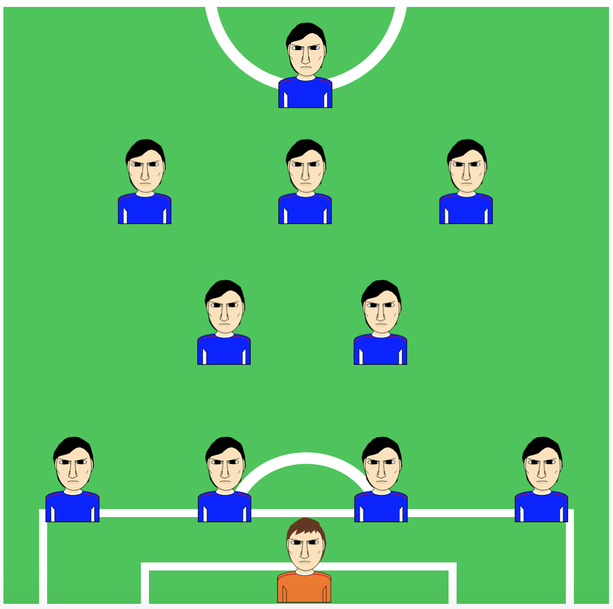

Keywords: reinforcement learning, sports, data
Managerial decisions should be important for the performance of the team. Using football data in Japan and Germany, we examined the following two hypotheses.
|  | |
| Fig: Schematic of the formation in football. We extracted the starting formation from such image data to be submitted to the analysis. | |
Reinforcement learning implies that, if you are successul you would stick to the same behaviour next time, and if you are unsuccessful you would switch to a different behaviour. In this way one expects to get a higher reward than before as the learning goes on. In the context of the present data analysis, the manager would change the starting formation in the next game if the team is defeated, and he would stick to the same formation if the team wins.
We used the data on starting formation simply because such data were available online (free of charge). The analysis was conducted using standard statistical methods such as multivariate linear regression.
Our data analysis supported hypothesis 1 but not 2. In other words, we found evidence that the managers' behaviour was consistent with reinforcement learning, but it did not mean a high winning rate for the team. It may not be nice to switch from one strategy to another every time the team is lost.